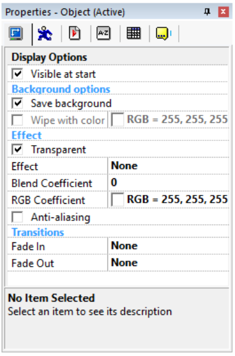
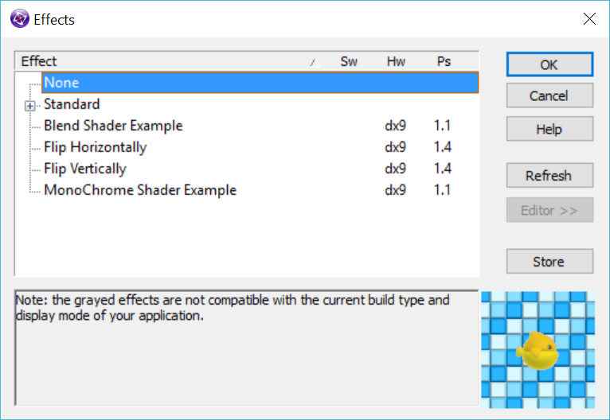
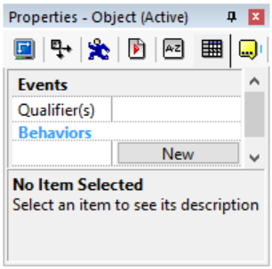
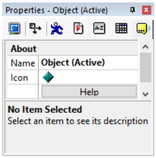

Exporters
Exporters Extensions
Extensions Interface
Interface Chowdren
Chowdren ClickStore
ClickStore Bug Tracker
Bug Tracker| |
This is an archive. |
| See the new ClickWiki at https://clickwiki.net. This version is just an archive for the purposes of migrating content to the new structure. |
Object Properties
Most of the objects have certain properties in common. The display properties for example, which allow the user to define how the object is displayed on the screen, or for example, the Alterable Values in which you can store data while the application is running.
This chapter will detail the Common properties of the objects. The Common properties are divided into several folders:
Contents
- 1 Display Options
- 2 Size/Position
- 3 Movement
- 4 Runtime Options
- 5 Values
- 6 Events
- 7 About
Display Options

The Display properties folder contains all the necessary to define how your object will be displayed on the screen.
{kind=link}
Visible at start
Check this box and your object will be visible when the frame starts. It is created, but hidden, when the box is not checked.
Background options
The background options allow you to tune how the background behind the object is saved and restored.
Save Background
If this mark is checked, the background behind the object is saved into a buffer, and automatically restored when the object moves. This property is usually defined for sprite objects. If it is not checked, the background is not saved, and this might give special interesting effects on the screen. If an object never moves on the screen and its image never changes, you can uncheck this option to speed up the display.
Wipe with color
If this checkmark is checked, when an object moves, its preceding location will be filled with one color, giving a kind of "paint brush" effect. Use the color selector to choose the color to use. Note that this option might be useful to save memory and accelerate the application: if your object moves in front of a one color background, then using this property will not harm the display and will make things faster.
Effect
The effect properties allow you to define how the object will be drawn on the screen. Note: These properties show in the Standard display mode. If you are using a Direct3D mode, then please see the Direct3D page for information about this section.
Transparent
If this property is checked, then the color defined as transparent in the image editor, will be transparent in the application. One will see what is behind. If not, then the transparent color will be displayed.
Effect

The Ink effect property allows you to control how your object is displayed in the application. This property is a dialog box, in which you can choose several options:
{kind=link}
None
The default mode, the non-transparent data of the object replace what is behind it.
Standard
Semi-Transparent
Parameters: Coef
In this mode, you have to define a semi-transparency coefficient (the next property), from 0 to 128. 0 Means that the object is opaque (and therefore is identical to the None ink effect), 128 meaning that the object is totally transparent, and won't be seen. Between 0 and 128 the non-transparent zones of the object will be melted in the display: you will be able to distinguish what is behind the object.
Inverted
The inverted mode inverts each one of the colors of the object, like a negative film.
XOR
The XOR setting makes the display processor compute the data of the object with the data of the background using a XOR logical operator. For certain color schemes, this might give interesting results.
AND
The AND mode is similar to the XOR mode with an AND logical operator.
OR
As above, with the OR logical operator.
Add
The RGB components of the pixels of the object are added to the RGB components of the pixels of the background.
Subtract
The RGB components of the pixels of the object are subtracted from the RGB components of the pixels of the background.
Monochrome
The colors of the object are converted to shades of gray.
Blend Shader Example
Parameters: fBlend
Simple example of shader with one parameter
Flip Horizontally
No info available, please add some!
Flip Vertically
No info available, please add some!
Monochrome Shader Example
Example of pixel shader, simple monochrome effect, no parameter
Warning
All the ink-effect properties imply complex calculations each time your object is displayed on the screen. For large objects, an ink-effect can significantly reduce the speed of your application, especially if the DirectX+VRAM mode is selected in the properties of the application.
Blend Coeffecient
No info available, please add some!
RGB Coeffecient
No info available, please add some!
Anti-Aliasing
Use a special computation of the colors to make them less edgy on the screen.
Transitions
Fade-in
The fade in properties allow you to define a transition effect, used when your sprite is created. Click the Edit button to open the Transition Setup dialog box.
Fade-out
The fade-out properties allow you to define a transition effect used to make your object disappear from the screen. This fade-out only occurs when the object is Destroyed by a Destroy action in the event editor. Click the Edit button to open the Transition Setup dialog box.
Size/Position

Position
X
Shows the current X (horizontal) position of the object. You can also change this value manually by entering the new position.
Y
Same as the X coordinate, but vertically. Here too you can change the position of the object manually.
Size
Width
Shows the current width of the object. You can enter a new value and resize the object horizontally.
Height
Shows the current height of the object. Here too, you can enter a new value and change its vertical size.
Rotation
Angle
Shows the current rotation angle of the object. You can change the value and actually rotate the object.
Movement
See Movement Properties.
Runtime Options
{kind=link}
Create Options
Create at start
If you uncheck this option, the object won't be created when the frame starts. You'll have to use a Create Object action to create an instance of this object.
Create before Frame fade-in transition
Available for extension objects. By default, the extension objects are not created before the fade in transition of the Frame starts. The Start of Frame actions and conditions for these objects are executed after the fade in transition ends. As lots of extensions are displayed in their own window, this option allows you to avoid these windows to be displayed during the transition. Check this option if you would prefer the object to be created before the transition starts.
Note: if you experience crashes in Start of Frame events and the Frame has a fade-in transition, try to check this option, the crash might happen because some expressions used by other objects in Start of Frame actions use expressions of extension objects not yet created.
Scrolling options
These properties control how the object behaves itself when your frame scrolls.
Follow the frame
If this property is checked, the object will move with the frame scrolling: if the frame goes to the left, the object will go at the same speed to the left and disappear on the left of the screen. If not checked, the object will stay static on the screen. This property is usually unchecked for scores and lives indicators.
Destroy if object is too far from frame
If your object goes past a certain limit away from the display, and if this property is checked, the object will be automatically destroyed. Warning, for scrolling games you must use this option with caution as it might destroy important objects.
Inactivate if too far from window
To save processing time, Clickteam Fusion 2.5 contains an option to stop the computation of the objects if they are too far from the display window. The object is not destroyed, but stops moving and reacting with collisions. Three settings are available:
- Automatic: objects specified in collision detection conditions are not inactivated. All other objects are inactivated.
- Yes: always inactivates if far from the window.
- No: never inactivates.
Collision
Use fine detection
Available for active objects only. If checked, the collisions with this object and the others will be pixel precise (transparent areas do not trigger a collision). If unchecked, the collision will be done in box mode, with the rectangular box that surrounds the object.
Memory options
Load on call
This option saves memory and accelerates loading time of big frames. If unchecked (default option), all the object's data are loaded at the beginning of the frame. For big objects on CD-ROM, this can create a small delay when the frame appears. If checked, and if the object is not created at the beginning of the frame, the object's data are not loaded at the beginning of the frame. They are only loaded when you create the object in the frame.
Global object
Makes the object global. Global objects have the great advantage to be unique for all the frames. Imagine the main character of your game, it is duplicated in many frames of the game. If you want to change a pixel of the character, you will have to change it in every frame. If your object is defined as global, you will not need to do so: change it in one frame only and the changes will be reflected in all the frames. For counters and strings, the content of the counter or string is duplicated from one frame to another. How to create a global object: first create your object in one frame, and mark it as global. To use the object in other frames, display the content of the first frame in the object selector of the frame editor, and drag and drop the original object into the new frame.
Editor synchronization
This option allows you to specify how global objects are synchronized across all frames in the editor. If this option is set to "No", the global object is not synchronized with others. If this option is set to "Identical Objects", the objects identical to the current are synchronized with it (this is the old way, which doesn't work sometimes for some objects, especially when they have behaviors). If this option is set to "Same name and type", the global objects with the same name and type as the current object will be synchronized with it. When you create a new object, this option is set to "Same name and type" by default. In old applications, this option is set to "Identical objects" for the existing global objects.
Automatic Rotations
Enabled
No info available, please add some!
Compatibility
Do not reset current frame duration when the animation is modified.
No info available, please add some!
Values

Lots of objects contain alterable values and alterable strings: internal counters and strings that you can change and make calculations with. The Values Properties allow you to set the initial value and name of the alterable values and strings.
New
Click on this button to add a value to the list. Then you simply click on the number or string and change it: the value indicated will be used to initialise the alterable value at runtime. You can also rename the value or string by double clicking on the name, or right-click the name and select the Rename or Delete command in the popup menu. Note: you can delete only the last value.
Events

The Events properties control two important features of Clickteam Fusion 2.5: the qualifiers and the behaviors.
{kind=link}
Qualifiers
A qualifier is a small icon and a name, that can be applied to several objects. For example, the "Bad" qualifier can be applied to all of your enemies in a game, even if they are different objects. They all can have the "Bad" qualifier. Under the event editor, the qualifier will appear in the list of objects. You can use the qualifier as you would do for any object. You now understand that it simplifies a lot programming the same event for all the baddies: instead of entering the action or condition for each of the bad guys, you simply use the qualifier "Bad" and everything is done in one line.
{kind=link}
The qualifier dialog box is simple: click on the Add button to choose a qualifier in the list of available qualifiers. Select a qualifier and press Delete to remove one qualifier.
Behaviors
Behaviors are a list of events, specific to the object. Using the Edit button in this property, you can open a new event editor to edit this list of events. Your object will be the only one listed. You can import new objects with the "Import object" button. You define your events as usual. The great advantages of the behaviors is that the events are integrated into the object's properties: it means that if you copy the object, the behaviors will be copied at the same time.
Example: you create a button that makes a click. Create a behavior that plays the sound "click" when you press the button. Then if you copy this object to another frame, it will click automatically when pressed.
About

The About properties contain the name and the icon of the object.
{kind=link}
Name
Enter the name of your object in this field. Enter a name that precisely describes your object, your events will be much easier to read.
Icon
Click on the EDIT button to open the icon editor and draw your icon the way you like.